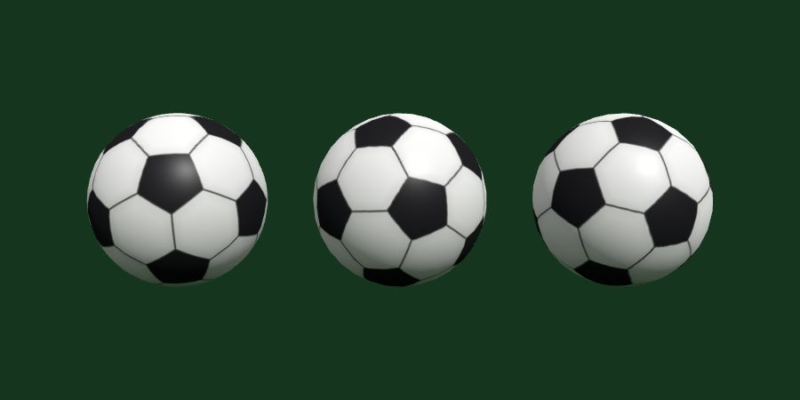
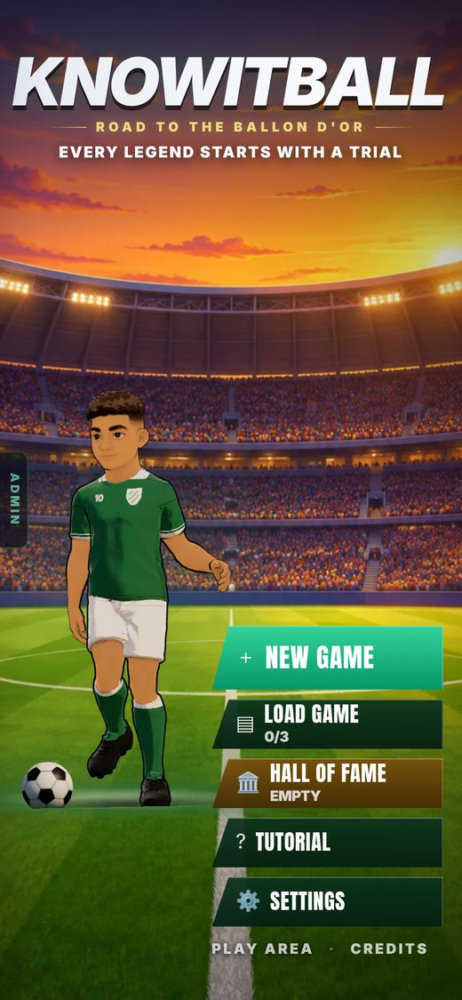
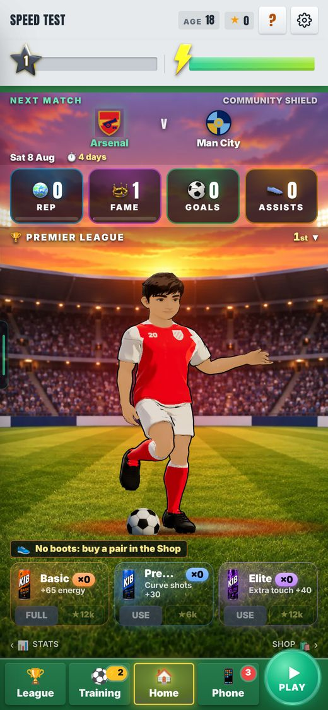
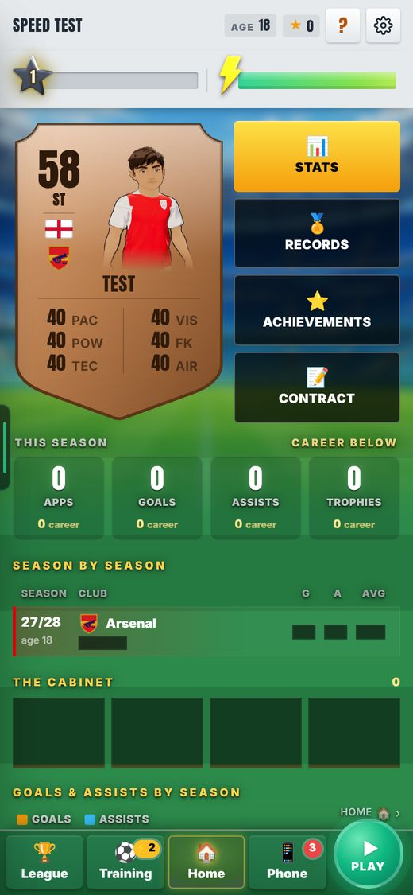
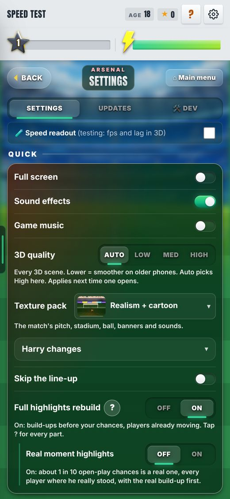
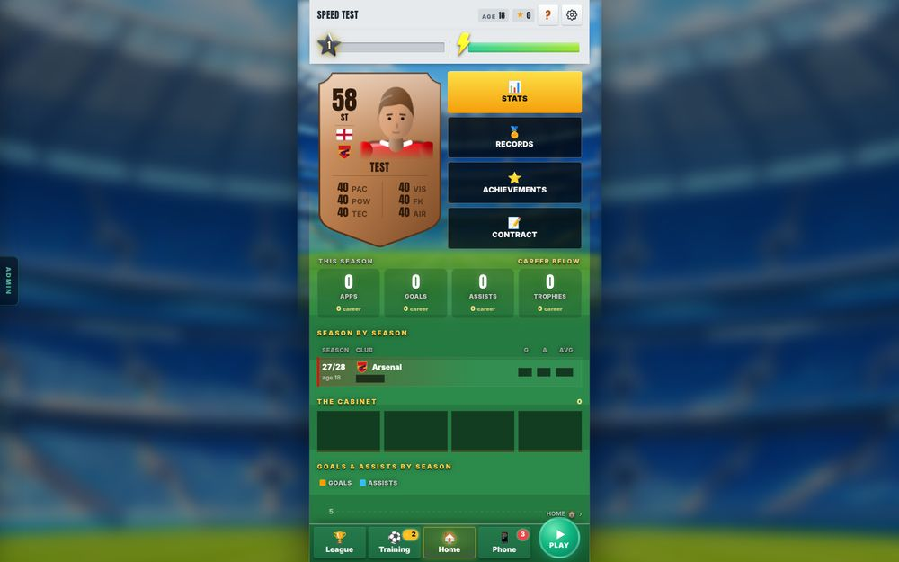

Not on purpose: Shop, Store and Casino (they keep charcoal), Training and drills (the pitch, by the team's ruling), the match, the Old UI.
Not yet: the Transfer Hub (it only opens in the summer), and moments with their own art: Ballon d'Or night, Farewell, Deadline Day, the relationship games.
Fixed from the preview: Settings no longer turns dark red; empty trophy shelves are light glass.
2 · A REAL FOOTBALL
The 3D ball now looks like a real football, and the title screen shows one ball, not two.

The new ball from three sides. Look for the black five-sided patches and the thin seams.
ProblemThe 3D ball was a plain white sphere with 6 black dots. It looked fake. The title screen also showed TWO balls at your feet.
WhyThe ball was a quick stand-in. On the title screen, a flat ball picture sat under the 3D player, and the 3D player has his own ball.
FixOne real ball everywhere in 3D: 12 black and 20 white patches with thin seams, the same pattern as a real match ball. The flat ball hides when the 3D player shows.
Drawing, not to scale. The real ball is the picture above.

Title screen: one ball at the feet.

Home: the new ball.
Seen on the title screen and Home. Not seen yet in training or cut scenes. Not changed: the 2D match and the frozen "Old" cut-scene look.
3 · A STADIUM BEHIND THE PITCH LOOK TOO
If you pick Pitch, you now see a blurred stadium too, not only green stripes.

Phone: stadium at the top, fading into green.

Settings: the club name sits on a dark band.

Computer: the stadium fills the edges either side of the page.
ProblemThe Pitch look was the same green stripes everywhere. On a computer the wide edges were empty green.
FixStadium at the edges on a computer, and in the top half on a phone. Cards are more solid with a light edge and a soft shadow. Small labels get a dark shadow, so you can read them.
You only see this if you pick Pitch. Glass is the default.
4 · NEW RULE: A WHOLE LOOK CAN BE A SETTING
A look for the whole game may be a choice in Settings. Gameplay and single features still get no New | Old row.
Brain note RUL-UI-007. It changes the old "decide, don't toggle" rule (RUL-UI-001) only for whole looks.
5 · THE TEST CHECK: ABOUT 10 MINUTES, NOT 30 TO 40
A small push to the site now runs a quick check, not every test the game has.
ProblemEvery push to the site waited for all 463 test files (16 minutes) plus the build: 30 to 40 minutes in all. And 5 of those tests fail anyway.
WhyThe 5 that fail (build-ups, fhr, five-a-side, long-range rules, real goals) also fail on the site WITHOUT this round's changes. They were broken before. So the long wait did not protect anything new.
FixHarry chose a quicker check for small pushes: a quick check that the code fits together, the safety guards, only the tests linked to the files that changed, then the build.
Drawn to scale: 40 minutes = the full width. Measured on this round's pushes.
For the Glass push: 7 linked tests ran passes
One (the test that counts the Settings rows) failed: it did not know the new "UI look" row. The row was added to its list. It now passes with 17 rows, and also passes on the site's older version.
The full 463 still matter
Suggestion: run all of them once a day, and before big pushes.
KNOWN ISSUES
Home keeps its night stadium behind the player
Every other screen has the day stadium. Harry to decide.
Energy-can cards on Home are cut off at the bottom
This was already so before Glass.
The Phone screen's drawn phone keeps a red club wallpaper
The League banner stays club red
Settings switch rows have hard-edged boxes
They do not look like glass yet.
Pictures use invented club data not seen with real data
The test setup had no key to the real database, so team sheets show made-up players.
5 tests were already broken untouched
build-ups, fhr, five-a-side, long-range rules, real goals. They fail on the site with or without this round.
The ball is not seen yet in training or cut scenes
The quick check is not a Brain note yet
The push rule (PRO-TEAM-001) still says "run every test". It needs a new note.
NEXT
Harry: day stadium on Home, yes or no yes / no
Home would match every other screen.
Fix the energy-can cards on Home
Playtest Glass with real club data
Write the quick check as a Brain note, and run all 463 tests once a day yes / no
The numbers, if you want them
Ball: 12 black pentagons, 20 white hexagons, drawn in one go (one draw call), so it costs no more than the old ball.
Full test run: 463 files, 16 minutes. 458 pass, 5 fail. The same 5 fail on the site before this round.
Quick check: quick check that the code fits together about 1 minute; guards; linked tests (7 for the Glass push); build 5 to 10 minutes. About 10 minutes in all, against 30 to 40 before.
Settings rows test: now expects 17 rows.
Designs looked at: 3 full looks (Clean pitch, Matchday broadcast, Glass stadium), each on Home, Stats and Settings.
Pictures: phones at 390 × 844, computer at 1440 × 900.